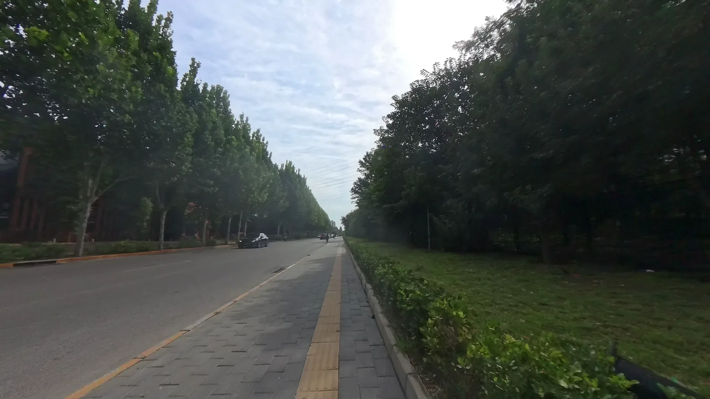
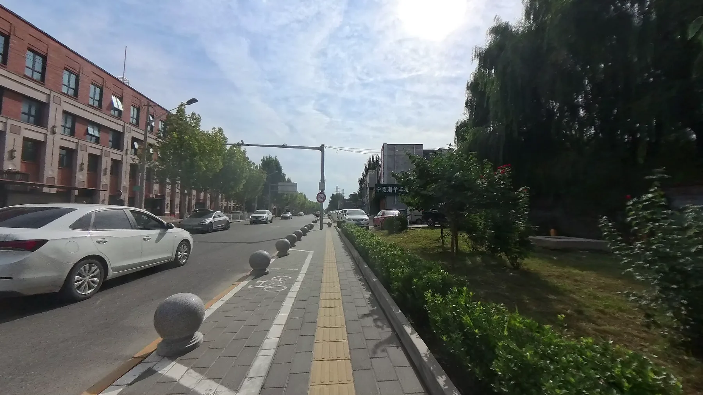
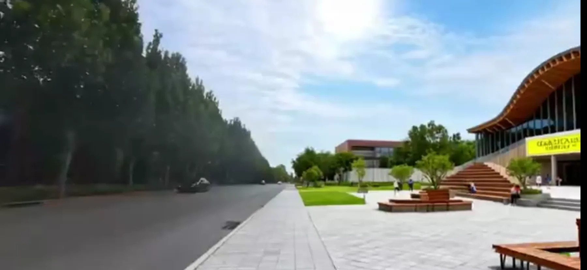

Problem
项目问题
街景更新表达常停留在静态图像，难以在连续视频中稳定呈现改造意图、深度关系和环境变化。
成果 PPT 展示
From street-view video input to controllable AI-generated urban scenes

静态街景效果图难以表达连续空间中的更新意图。
用 prompt、图像编辑和 depth map 条件控制视频再生成。
多组可对比的街景更新视频生成结果。
参与流程梳理、控制条件比较和成果展示整理。
Problem
街景更新表达常停留在静态图像，难以在连续视频中稳定呈现改造意图、深度关系和环境变化。
Method
Output
形成从街景视频输入到可控再生成视频的演示流程，为城市更新方案表达提供动态化视觉路径。
Gallery


